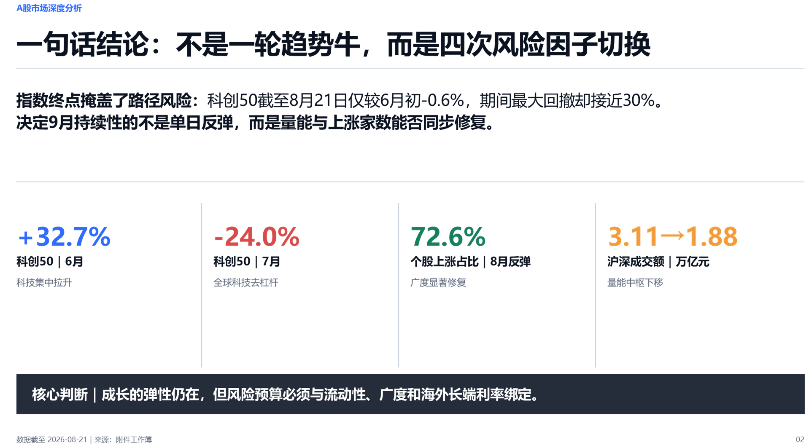

A data-heavy commercial analysis case covering index paths, liquidity, sector rotation, representative companies, IPO funding pressure, and September uncertainty.
Selected slideExecutive synthesis
01/09

The deck opens with one conclusion, four evidence anchors, and an explicit risk budget.
02 · EVIDENCE CHAIN
The output is the end of a governed chain.
01Logic
Separate four market regimes, define claims, and bind each claim to quantitative evidence.
02Copy
Compress the analysis into conclusion-led titles, key numbers, and explicit decision tests.
03Art direction
Assign visual weight, chart form, comparison structure, and cross-slide rhythm.
04Output + QA
Build editable slides, render the deck, and inspect consistency before delivery.
03 · RELEASE CAPABILITY MAP
What each public version established
Releases are described by verifiable repository capability. Same-input visual comparisons will only be labeled as such when both outputs are preserved.
v0.1.0
2026-08-20
Governed foundation
Five-stage Logic → Copy → Art Direction → Output → Supervisor workflow
Central configuration, contracts, validators, and bilingual references
Synthetic approved-handoff regression and CI across Python 3.10–3.12
v0.2.0
2026-08-20
Production structure
Human-admitted, hash-bound local knowledge runtime
Renderer-neutral relative-layout solver and render contracts
Bounded execution ledger and isolated experimental editable-object adapter
v0.3.0
Current release
Content-aware growth
Content-aware canvas analysis with subject, placement, crop, contrast, and directional-flow evidence
Governed template and icon selection with license and never-copy boundaries
Ten-case fixed regression plus a public Experience Center
04 · ENTERPRISE COGNITION
From metric lookup to an enterprise cognitive system
Two related Chinese-language outputs turn the ChatBI discussion into an architecture view and a compact advisory narrative. Both editable source decks are available below.
Architecture study · 1 slide
ChatBI enterprise cognitive architecture house
A single high-density architecture page connects business applications, semantic and reasoning services, governed data and computation, operating controls, and the learning feedback loop.
The deck makes the failure modes visible: metric lookup is not analysis, a semantic layer cannot absorb human accountability, and trustworthy enterprise cognition requires an operating loop rather than another platform layer.
Inspect the slides, compare the release capability map, and open the editable PowerPoint before deciding whether the workflow fits your presentation work.